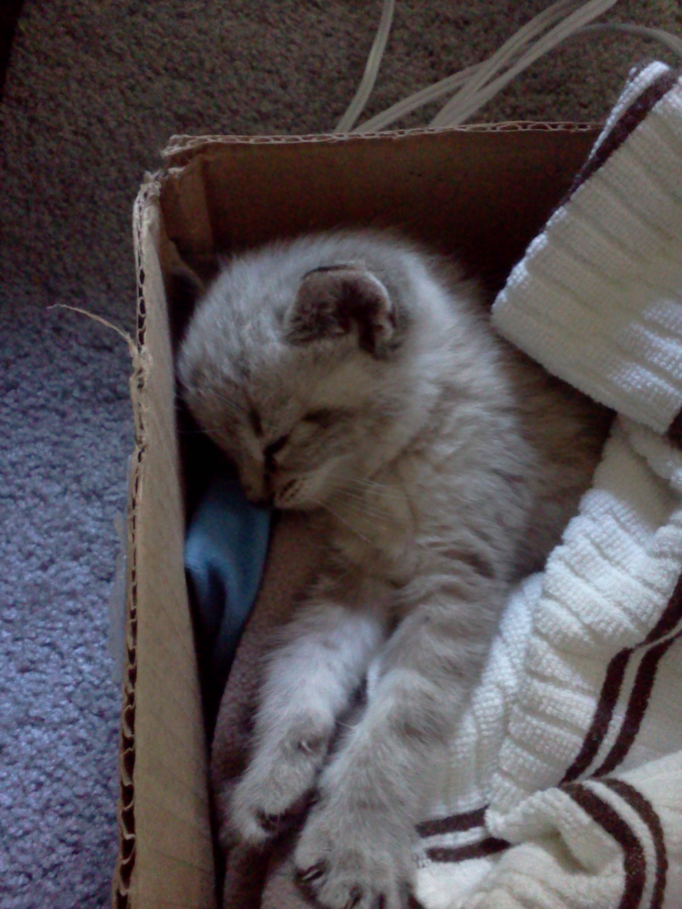
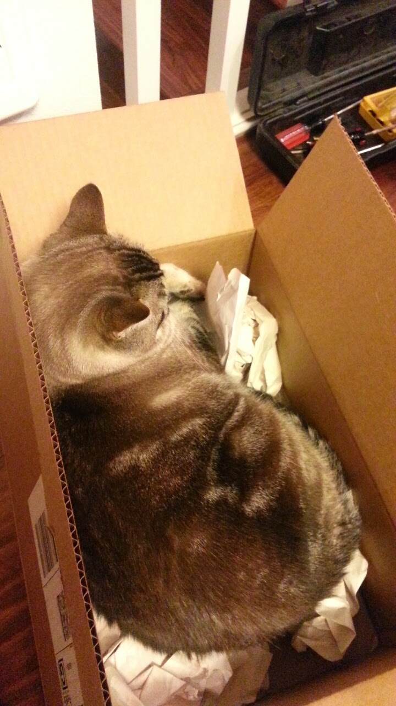

Meet Moose!
This is Moose on the first day I brought him home, his first cardboard box bed!
Moose is 3 years old now, but he still likes boxes
Oddly, Moose does not enjoy eating raw sardines!

Moose dislikes this photo because he thinks it makes his face look chubby

Moose hates when I photo bomb his selfies